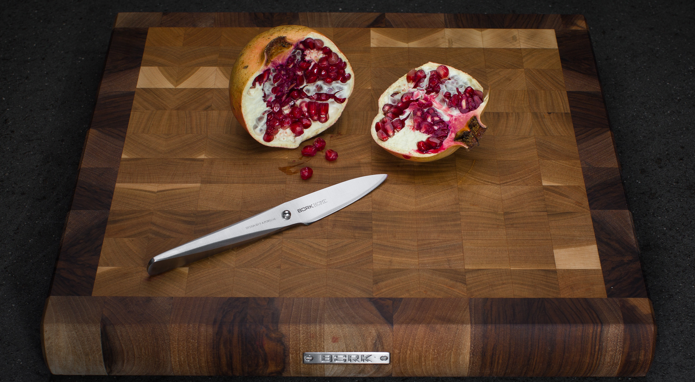
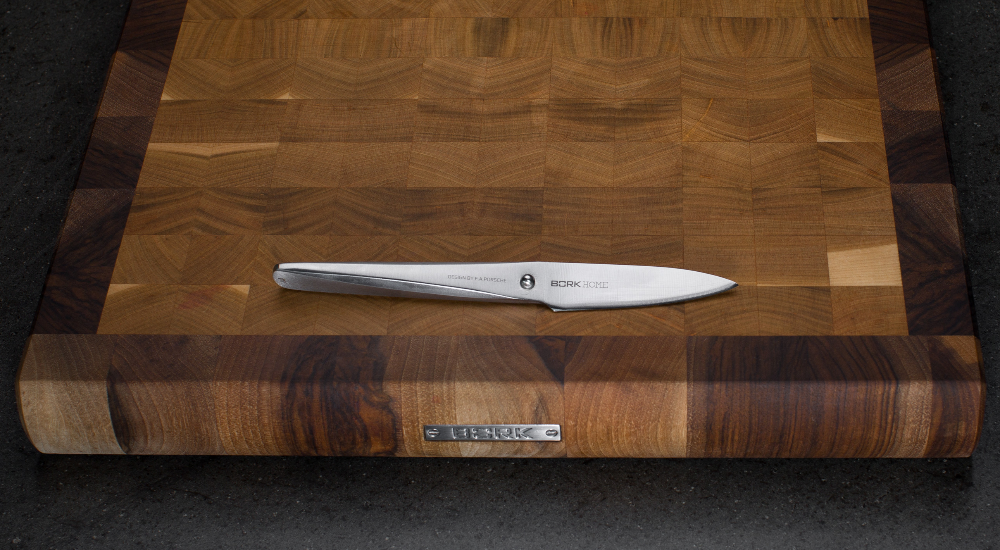
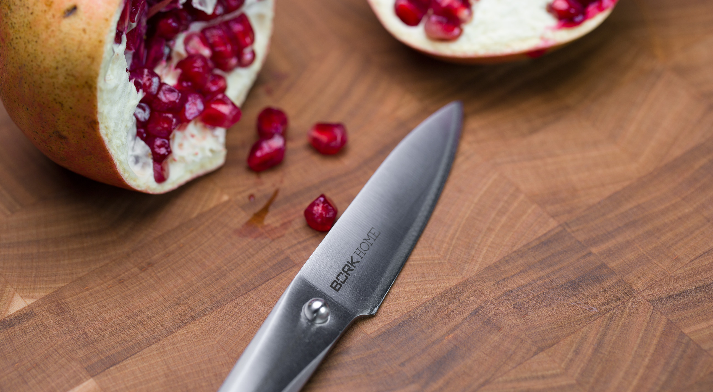

Нож для чистки овощей BORK HN506
Нож для чистки овощей — небольшой нож с прямым клинком, внешне напоминает уменьшенную копию шеф-ножа.
Клинок такого ножа идеален для очистки и замысловатых работ, связанных с вырезанием сложных композиций из овощей и фруктов.
Идеальный инструмент для труднодоступных и неудобных мест на продуктах.
Кухонный нож для чистки овощей длиной 8 см. создан без единого шва для гарантии гигиеничного и максимально комфортного использования.
Благодаря специальному способу затачивания изделие дольше остается острым.
Нож для чистки овощей BORK HN506 полностью изготовлен из японской высококачественной нержавеющей стали AISI 301.
Дизайн ножа выполнен студией Porsche Design.
Серия ножей была разработана вместе с топ-шеф- поварами из разных стран. Дизайн ножа основан на методах работы профессиональных поваров, которые часто используют свои ножи под разными углами резки.
Ручка и лезвие полностью сливаются друг с другом, образуя единое целое. Только шарик из нержавеющей стали сигнализирует о разделении, а также является упором для указательного и большого пальцев.
Необычный дизайн в сочетании с продуманной эргономикой делает ножи BORK уникальным дополнением вашей кухни и признанным инструментом более чем 200 шеф-поваров Германии.